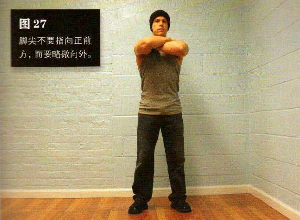
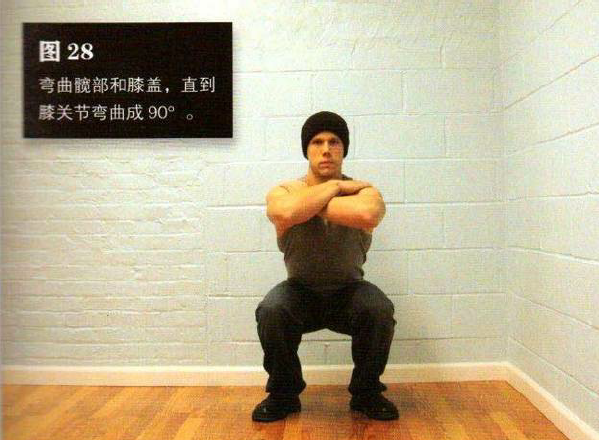

站立，双脚分开，与肩同宽或略宽。脚尖不要步勃 M 前方，而要略微向外。双手放在髋部、胸部、肩部都可以——以舒适为前提。
弯曲髋部和膝盖，直到膝关节弯曲成 90°—换句话说就是大腿与地面平行。这是该动作的最低点。
刚开始你可以借助一面镜子或是找朋友帮忙，直到能够自如地控制动作幅度。不要求快，也不要借助惯性起身，而要完全在肌肉控制下做整个动作。在最低点（半空中）坚持 1秒钟，然后再回到起始姿势。在整个动作过程中，背部始终要挺直，双脚脚跟始终不能抬离地面。膝盖与脚尖应该始终朝向同一方向，深蹲时膝盖绝不要向内转，脚尖指向外有助于你做到这一点。
初级标准：1 组，8 次
中级标准：2 组，各 35 次
高级标准：2 组，各 50 次